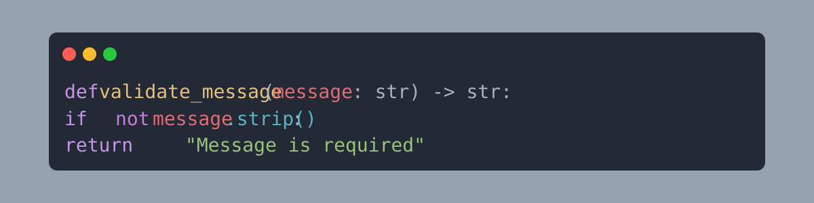

Python Input Validation

Full-Stack Developer (in training) Learning in public
I turn ideas into working projects while learning by building.
Learning in public while building practical projects that solve real problems.
I am a learning-focused Software Engineer building full-stack projects to deepen my practical skills step by step. My current focus is turning core concepts into working systems, improving code quality, and understanding how reliable software is designed, tested, and deployed. I may still be growing, but every project is intentional and aimed at measurable progress.
Core technologies I use in delivery, plus areas where I am actively training.
A practical mini-guide for terms I am actively learning and using.
Stores app data so it can be reused later.
Example: users, attendance, and reports in SQLite or PostgreSQL.

Selected builds with clear problem framing, execution approach, and current status.
Manual record-keeping for attendance is slow, inefficient, and highly prone to human error.
Approach:Built a digital workflow designed to replace paper-based tracking, ensuring accurate and secure data management.
Outcome:A faster, more reliable digital tracking system for administrative efficiency.
Identifying malicious and deceptive URLs manually is difficult and exposes users to significant security risks.
Approach:Developed a Python-based web app combining URL feature extraction with machine learning algorithms to classify suspicious links.
Outcome:Delivered an automated URL analysis workflow that improves detection speed and reduces manual review effort.
Building a simple interactive project to strengthen practical game logic, control flow, and state management.
Approach:Delivered a working browser game with clear mechanics, strategic decision-making, and a cohesive narrative arc built into gameplay.
Outcome:A playable 7-day game loop where every action trades off between energy, momentum, and reputation—with real consequences for each choice.
Cloud-only telemedicine architectures can suffer from high latency, which negatively impacts real-time healthcare delivery.
Approach:Engineering and researching an architectural comparison between fog and cloud computing focusing on responsiveness and reliability.
Long-term R&D toward a symbiotic, bio-integrated AI that functions as an evolving second subconscious.
Phase 1 Focus (Current):Building a multimodal biosignal ingestion pipeline for ECG, PPG, EEG, and EDA to capture and synchronise physiological states such as hunger, curiosity, and boredom.
Validating the pipeline on public datasets such as PhysioNet and DEAP, while developing simple Python visualisation tools to plot two signals on a shared time axis.
Core Technical Concepts:Multimodal synchronisation via timestamp alignment using Lab Streaming Layer.
Passive, evergreen calibration so the system learns the user's unique signal patterns from natural body events without active training.
Subconscious firewall behavior that extracts only task-relevant features so raw intimate data is never stored.
Bidirectional capability through isolated testing of invisible motor-write using non-invasive surface stimulation to prove two- way communication.
Ethical-by-design controls with motor veto, emergency escalation through a kin-first chain, and full reversibility of the interface.
Long-term Vision:A body-powered, minimally invasive implant that the body accepts as its own, paired with an external sovereign server for compute and storage.
An AI that evolves with the user’s persona, delivers information through a non-obstructive visual display, and autonomously protects the user in life-threatening situations.
Topics I share in community sessions and practical technical discussions.
Beyond coding, I actively share insights with the tech community. I am passionate about simplifying complex concepts and facilitating discussions on:
Verified training records from Coursera.
Issued by Meta on March 14, 2026.
Verify Certificate →Issued by IBM on March 10, 2026.
Verify Certificate →Open to project collaborations, technical partnerships, and speaking opportunities.
Tell me what you are building, who it is for, and what outcome you want. I will reply with a practical next step.
Draft your message here first. This helps you send clear, context-rich requests.
Mention your business goal first, then your deadline, then your budget range. This gives quick direction.
Include current stack, blockers, expected deliverables, and repo or architecture links for faster alignment.
What your outreach currently sounds like.